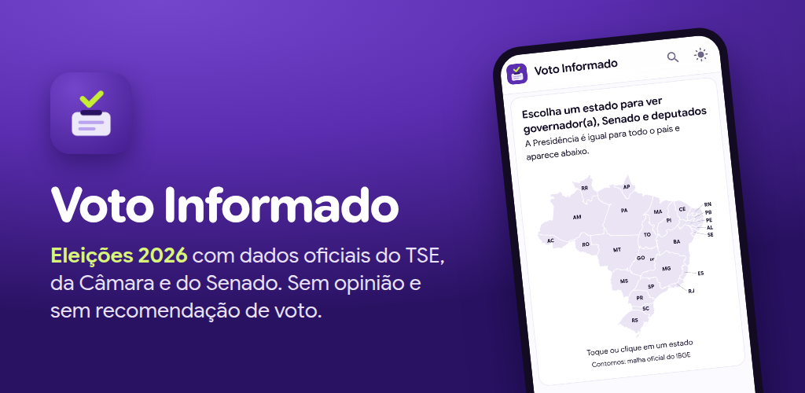
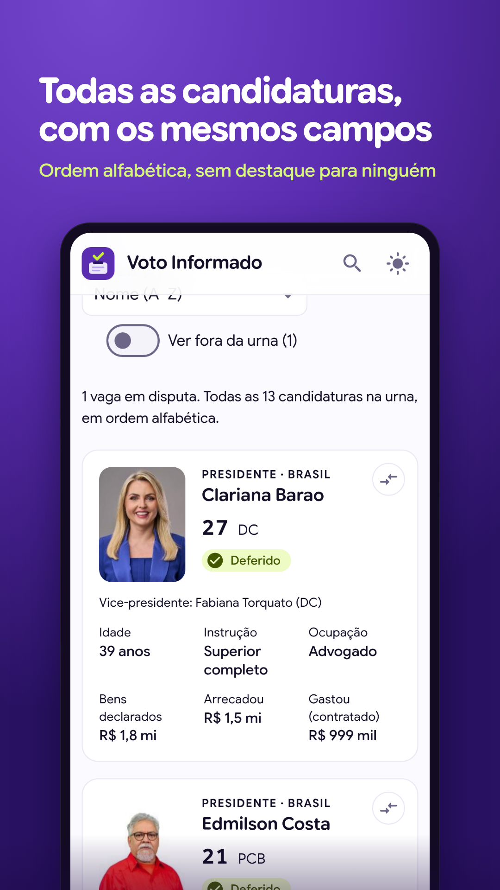
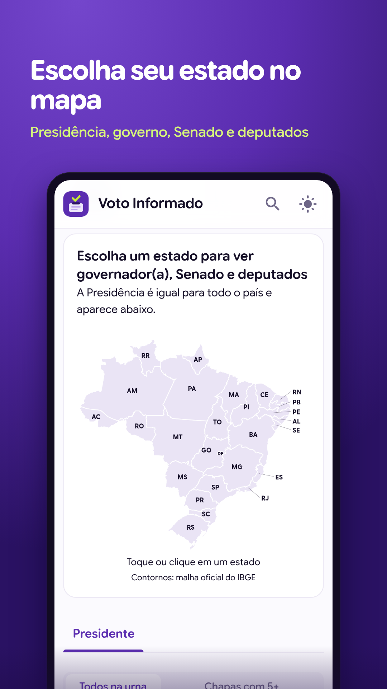
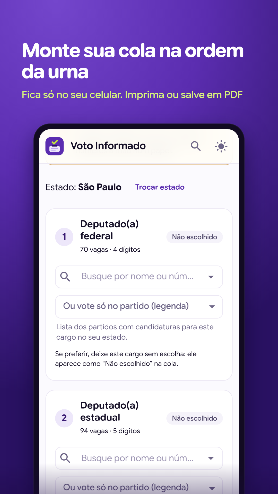
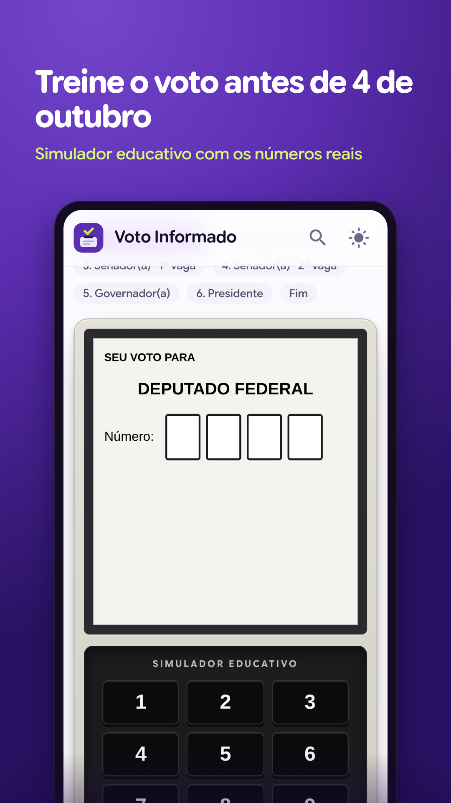
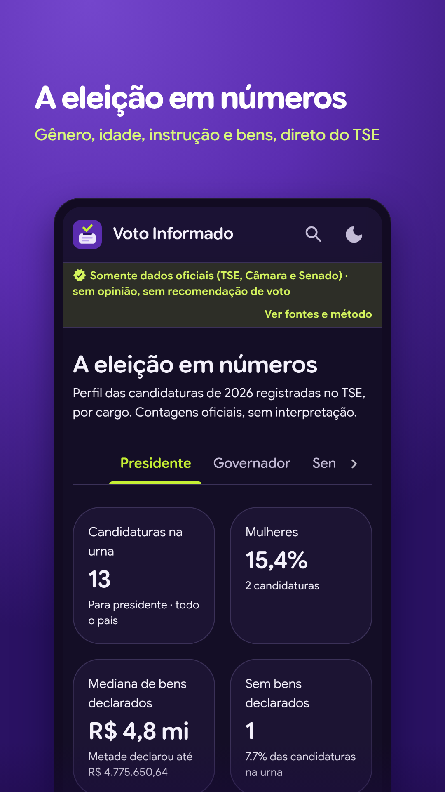
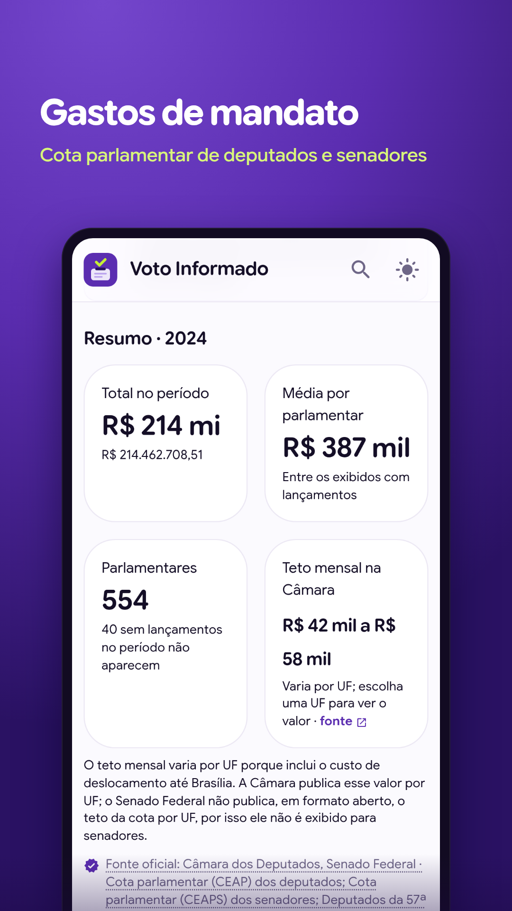
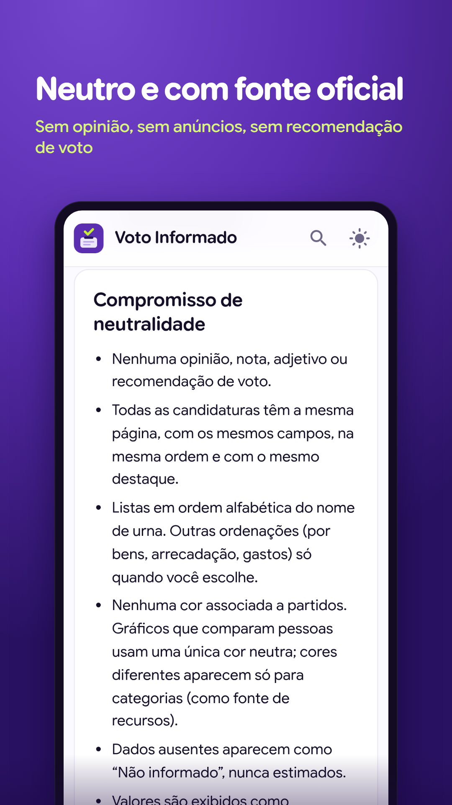

Kit Google Play · Voto Informado
Tudo o que o Play Console pede, pronto para copiar, na ordem do guia de publicação. Textos em pt-BR com os limites de caracteres conferidos.
1. Arquivos para enviar
- Pacote do app:
frontend/android/app/build/outputs/bundle/release/app-release.aab(gerado pormake app-release) - Ícone 512×512:
loja/play/icone-512.png - Imagem de destaque 1024×500:
loja/play/imagem-destaque-1024x500.png - Capturas de tela do telefone:
loja/play/prints/(envie na ordem dos números). Versões sem moldura emloja/play/prints-sem-moldura/








Os prints não destacam nenhuma candidatura: a única tela com pessoas é a lista completa em ordem alfabética, a mesma regra do app.
2. Ficha principal da loja
Inclui o aviso de app não oficial e os links das fontes oficiais, exigidos pela política do Google Play para apps com informações de governo.
Tipo: App. Evite “Notícias e revistas”: essa categoria exige a declaração de app de notícias.
3. Detalhes de contato e links
Fica público na loja. Se preferir outro e-mail, troque aqui e em frontend/src/config/legal.ts (Política de Privacidade).
4. Conteúdo do app (menu Política → Conteúdo do app)
| Pergunta no Play Console | Resposta |
|---|---|
| Política de Privacidade (URL) | https://professorbossini.dev/voto-informado/privacidade Precisa estar no ar antes do envio: rode make publicar (passo 1 do guia). |
| Acesso ao app | Todas as funcionalidades estão disponíveis sem acesso especial Não há login. |
| Anúncios: o app contém anúncios? | Não |
| Classificação do conteúdo: categoria | Referência, notícias ou educação |
| Classificação: violência, sexo, linguagem imprópria, drogas, jogos de azar, terror | Não, para todas |
| Classificação: usuários interagem ou trocam conteúdo entre si? | Não O app só exibe dados públicos; “Compartilhar” usa a tela do próprio sistema. |
| Classificação: compartilha a localização do usuário? | Não |
| Classificação: permite comprar produtos digitais? | Não |
| Classificação: é um navegador ou mecanismo de pesquisa? | Não Links externos abrem no navegador do sistema. |
| Resultado esperado | Livre (ClassInd L) · PEGI 3 · Everyone |
| Público-alvo: faixas etárias | 16 a 17 anos e 18 anos ou mais Voto facultativo a partir dos 16. Não marque faixas abaixo de 13 (isso aciona o programa Famílias). |
| O app pode atrair crianças sem querer? | Não |
| App de notícias? | Não Ele exibe dados oficiais estruturados, não publica notícias. |
| ID de publicidade: o app usa? | Não Conferido no manifesto final: a única permissão é INTERNET. |
| Apps governamentais: desenvolvido por um governo ou em nome dele? | Não O aviso de “não oficial” já está na descrição e no rodapé do app, como pede a política de Declarações enganosas. |
| Recursos financeiros, saúde, VPN | Nenhum / não se aplica |
5. Segurança dos dados
| Pergunta no Play Console | Resposta |
|---|---|
| O app coleta ou compartilha algum dos tipos de dados do usuário exigidos? | Não Gera o selo “Nenhum dado coletado”. O que o app guarda (cola, comparação, tema) fica só no aparelho e nunca é enviado; pela definição do Google, isso não é coleta. |
| Todos os dados são criptografados em trânsito? | (só aparece se a resposta acima for Sim) Se aparecer: Sim, toda a comunicação é HTTPS. |
| O app permite criar conta? | Não Por isso não é preciso informar URL de exclusão de conta. |
6. Versão de produção
Dica: ative a Publicação gerenciada (Visão geral da publicação). Mesmo aprovado, o app só entra no ar quando você clicar em “Publicar”. Assim ele não estreia em 4/10, dia da votação.